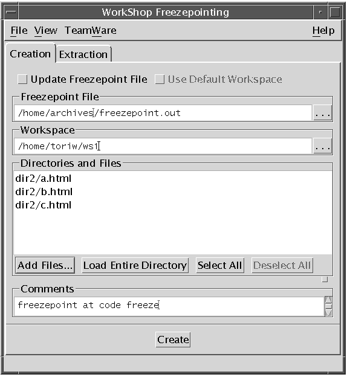
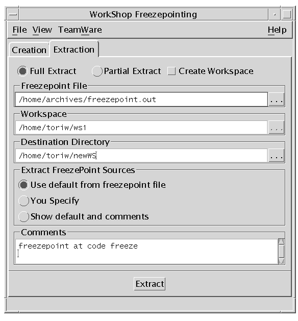

| Sun WorkShop TeamWare User's Guide |
Using Freezepointing
With Freezepointing, you can preserve a "snapshot" of the files in your workspace and then retrieve that version of the file at a later time.
The chapter contains the following sections:
- Introduction to Freezepointing
- How Freezepointing Works
- Starting Freezepointing
- Creating a Freezepoint File
- Updating a Freezepoint File
- Extracting Files
- Automatically Generating Freezepoints
- Reading Freezepoint Files Format
Introduction to Freezepointing
During the software development process, it is often useful to create freezepoints of your work at certain times in the release cycle. Freezepoints serve as snapshots of a project that enable you to later re-create the state of the project at key development points.
One way to preserve the state of the project is to make a copy of the project files using the standard backup utilities. This method is effective, but it requires a large amount of storage resources and time. With Freezepointing, you preserve freezepoints quickly and simply, using a small amount of storage resource.
This chapter covers the Freezepoint tool, which has a graphical user interface (GUI). You can also issue freezepoint commands from the command line (see Chapter 11).
How Freezepointing Works
Freezepointing lets you create freezepoint files from workspaces. At a later time you can use the freezepoint files to re-create the files and directory hierarchies contained in the workspaces. By default, Freezepointing extracts only files and directories; that is, it retrieves the delta of each file without the file history. Freezepointing gives you the option of recreating a workspace containing the histories for all extracted files.
Creation Defined
When you create a freezepoint file, you specify directories and files to include in the Directories and Files pane of the Freezepointing window (see FIGURE 8-2). Freezepointing recursively descends the directory hierarchies and identifies the most recently checked-in deltas in each history file. Freezepointing then creates a freezepoint file that consists of a list of those files and unique numerical identifiers for each delta (see Reading Freezepoint Files Format).
Freezepointing saves the most recently checked-in delta of a file. This may or may not be the same as the default delta. In the example below, the default delta is 1.3. If 1.2.1.1 is the last delta that has been checked in, Freezepointing will save 1.2.1.1.
FIGURE 8-1 Which Delta Freezepointing Saves
Extraction Defined
After you have created a freezepoint file, you can use it to retrieve your files from it. You specify the name of the freezepoint file, the path name of the directory hierarchy from which the deltas are to be extracted (if different from the hierarchy from which it was derived), and the directory where you want the source hierarchy recreated.
Note – Because a freezepoint file is only a list of differences, you must have the original workspace (or its parent or child) to extract from a freezepoint file.
The extract operation consists of creating a new directory hierarchy based on the information contained in the freezepoint file. The new hierarchy is comprised of files defined in the original history files; the history files themselves are not recreated unless you ask Freezepointing to create a workspace while performing the extraction. Deltas are extracted from history files located in the original source workspace.
Source Workspace
The source workspace is the directory hierarchy that contains the SCCS history files from which the freezepoint file is created. Usually, the source workspace is also the directory hierarchy from which files are later extracted to recreate the hierarchy. You can specify an alternate source directory at the time you perform the extract operation.
Destination Directory
The destination directory is the top-level directory into which the files listed in the freezepoint file are extracted. You specify the path name of this directory in the Extract pane of the Freezepointing window.
Starting Freezepointing
You can start Freezepointing by:
- Typing
twfreezeat a shell command prompt, followed by the ampersand symbol (&)- Choosing TeamWare
Freezepointing in the Configuring, Merging, or Versioning window
The Freezepointing window opens with the Creation tab displayed (see FIGURE 8-2).

FIGURE 8-2 Freezepointing Window: Creation Tab
TABLE 8-1 lists the items in the Freezepointing Creation tab.Creating a Freezepoint File
1. In the Configuring Window, choose TeamWare
- The Creation tab is displayed (see FIGURE 8-2).
2. You can accept the default name offreezepoint.outor type the name of the freezepoint file in the Freezepoint File box.
- When you start Freezepointing, the Freezepoint File text box is automatically set to contain the file
freezepoint.outappended to the path name of the directory from which Freezepointing was started. You can enter your own path or file name. Path names that are not absolute are assumed to be relative to the directory in which Freezepointing is started.3. Type the name of the source workspace in the Workspace text box.
- When you start Freezepointing, the Workspace text box is automatically set to the workspace you have specified using the
CODEMGR_WSenvironment variable. If the variable is not set, and the directory from which Freezepointing is started is hierarchically within a workspace, the Workspace text box is initialized with the path name of that workspace.4. Create a list of the directories and files that you want to preserve in the Directories and Files pane.Click the Add Files button to open the Add Files dialog box.
- Select the files you want to include.
- Click a file name to select it. You can Shift-click to select multiple files.
- Click Add Files to List to add the file(s) to the Directory and Files pane.
- The Load Entire Directory button inserts the "
./" characters into the Directories and Files pane indicating that the entire workspace hierarchy be included.
5. Type an optional comment in the Comments text field.
- The comment is stored in the freezepoint file for future reference.
6. Click Create.
- A counter on the bottom left of the Freezepointing window displays the progress of the freezepoint operation.
Updating a Freezepoint File
1. In the Configuring Window, choose TeamWare2. Click the Update Freezepoint File check box.3. You can accept the default name of freezepoint.out or type the name of the freezepoint file in the Freezepoint File box.4. Click the browse button to the right of the workspace box or type the name of the workspace in the Workspace box.5. Click Add to add files and directories to the Directories and Files list.6. Type a comment in the Comments box (optional).7. Click Update.8. If you want to update an existing Freezepoint file, select the Update Freezepoint File check box.The Use Default Workspace check box is enabled.
To freezepoint the workspace named in the existing Freezepoint File, select the Use Default Workspace check box.
Extracting Files
To extract a new source hierarchy described by a freezepoint file:
1. In the Configuring Window, choose TeamWare
- The Creation tab is displayed.
2. Click the Extraction tab.
- The Extraction tab is displayed (see FIGURE 8-4).
3. Type the path name of your freezepoint file in the Freezepointing File text box.
- Path names that are not absolute are assumed to be relative to the directory in which Freezepointing is started.
4. Click the Full Extract or the Partial Extract radio button.
- Full Extract extracts the complete set of frozen files. Partial Extract extracts a subset that you identify. You must choose either a full or partial extract whether or not you choose to create a workspace.
5. Click the Create Workspace check box to create a workspace that contains the SCCS histories of the frozen files.6. Click one of the three Extract FreezePoint Sources radio buttons to specify the source workspace.
- Use default from freezepoint files--uses the path name of the source workspace as it is in the freezepoint file.
- You specify--lets you type a workspace path name.
- Show defaults and comments--displays the path name of the source workspace in the Workspace text box.
- To specify a source workspace hierarchy other than the one contained in the freezepoint file, click the You specify radio button and type the path name of the alternate source workspace in the Workspace text box.
7. Type the path name of the directory in which you want the new (extracted) hierarchy to be located in the Destination Directory text box.
- Path names that are not absolute are assumed to be relative to the directory in which Freezepointing is started.
- The destination directory that you specify can be new or existing. If you extract the hierarchy to an existing directory, you receive a warning message and must confirm the operation.
8. Click the Extract button to begin the extraction.
- If you selected Partial Extract, Freezepointing opens a dialog box listing the source files in the freezepoint file. Select the files you want to extract.
- Clicking the Extract button causes a series of
sccsgetoperations to be performed on the source files listed in the freezepoint file. The version of each file extracted is the version specified by the SMID in the freezepoint file. The extracted g-files are written to destination directory. If you have selected Create Workspace, SCCS histories are also written to the destination directory.A counter on the bottom left of the Freezepointing window displays the progress of the extract operation.
FIGURE 8-3 Freezepoint in Progress
Note – If, during an extraction, Freezepointing cannot locate a file that has been renamed or deleted, the extraction is aborted and Freezepoint gives you the name of files it could not find. You must edit the freezepoint file to remove the files. Refer to thefreezepointfileman page for information about determining the new name of a renamed file.

FIGURE 8-4 Freezepointing Window: Extraction Tab
TABLE 8-2 lists the items in the Freezepointing Extraction tab.Automatically Generating Freezepoints
You can configure Sun WorkShop TeamWare to create a freezepoint every time you perform a certain transactions, such as bringovers and putbacks.
1. In the Configuring Window, select a workspace.2. Choose Workspace3. Click the Freezepointing tab.
- The Freezepointing tab of the Workspace Properties dialog box is displayed (see FIGURE 8-5).
4. Click Yes for the time(s) you want a freezepoint created.5. Click OK.FIGURE 8-5 Workspace Properties Dialog Box: Freezepointing TabFreezepointing creates freezepoint files in your workspace under the
Codemgr_wsdata/Freezepointsdirectory. Autofreezepoint creates a directory for each day in the formatCodemgr_wsdata/Freezepoints/YYYY/MM/DDwhereYYYYis the year,MMis the month, andDDis the day. The freezepoint file has a name ofHHMMSS.fp.Z, whereHHis the hour,MMis the minute andSSis the second. The .Zextension indicates that autofreezepoint files are compressed with the/bin/compresscommand.Reading Freezepoint Files Format
You can view the contents of a freezepoint file using a standard text editor.
A freezepoint file is a text file that lists the default deltas from the SCCS history files contained in the workspace hierarchy being preserved. When you later re-create the hierarchy, Freezepointing uses those entries as pointers back to the original history files and to the delta that was the default at the time the freezepoint file was created.
The deltas are not identified by their standard SCCS delta ID (SID). Instead, a new means of identification called an SCCS Mergeable ID (SMID) is used. Using the SMID enables Freezepointing to work properly with files in which SIDS have been renumbered as part of a Configuring Bringover Update transaction. For more information, see About SCCS Mergeable IDs.
The freezepoint file contains the following information:
- The path name of the workspace from which the list of deltas was created
- The date and time that the file was created
- The login name of the user who created the freezepoint
- A group of hex digits that identifies the most recent SCCS deltas found in each file's corresponding SCCS history file
- A group of hex digits that identifies the root delta in each file's corresponding SCCS history file
- An optional user-supplied comment
The following example shows a section of a freezepoint file. There are three entries; the rest of the lines are informational comments.
|
Sun Microsystems, Inc. Copyright information. All rights reserved. Feedback |
Library | Contents | Previous | Next | Index |